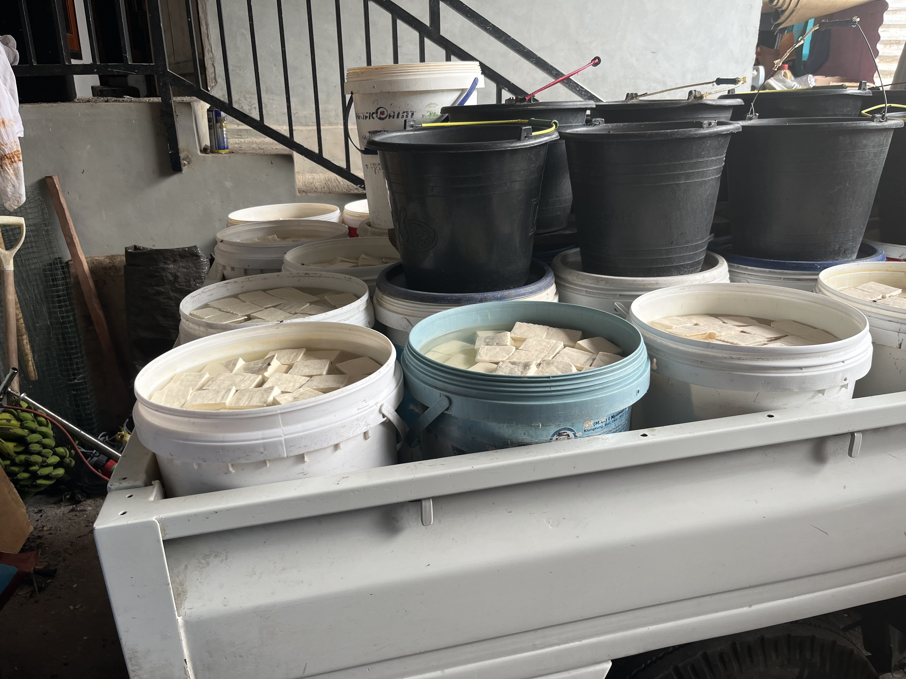

Kepala Kelurahan
Selamat Datang
Di Kamasi Satu.
Kenali masyarakat, sejarah, potensi lokal, dan kehidupan di Kamasi Satu, Kecamatan Tomohon Tengah, Kota Tomohon, Sulawesi Utara.

3.240Penduduk
920Kepala Keluarga
15+UMKM Lokal
10+Fasilitas Umum
Mengenal Kamasi I.

Tentang Kamasi I
Kamasi 1 merupakan salah satu kelurahan yang berada di Kecamatan Tomohon Tengah, Kota Tomohon, Provinsi Sulawesi Utara. Berada di kawasan Kota Tomohon yang dikenal dengan lingkungan pegunungan dan suasana yang sejuk, Kamasi 1 berkembang sebagai wilayah permukiman dengan kehidupan masyarakat yang erat dan dinamis.
- Kelurahan
- Kamasi I
- Kode Pos
- 95441
- Lurah
- Yanny Tumewu, SE
- Kota / Provinsi
- Tomohon / Sulawesi Utara
- Luas wilayah
- ± 1,8 km²
- Lingkungan
- 3 Lingkungan
USAHA LOKAL / KAMASI SATU
Potensi UMKM
Kamasi Satu.
Kenali usaha pangan yang menjadi bagian dari potensi lokal Kamasi Satu. Pilih salah satu untuk melihat ringkasan dan dokumentasinya.

01 / USAHA PANGAN
Pabrik Tahu
Produksi tahu menjadi salah satu potensi usaha pangan yang ditampilkan di Kamasi Satu. Foto ini memperlihatkan tahu yang disiapkan dalam wadah produksi.
Nama pengelola, alamat, dan informasi produk akan dilengkapi setelah data usaha tersedia.
PRODUK LOKAL / 02
Kacang
Hai. Foto usaha belum tersedia
Hai. Foto usaha belum tersedia
02 / USAHA PANGAN
Kacang Hai
Kacang Hai ditampilkan sebagai salah satu potensi olahan pangan lokal. Cerita usaha, ragam produk, dan dokumentasi dapat ditambahkan setelah informasi dari pengelola tersedia.
Foto dan detail usaha masih menunggu data yang dapat dipublikasikan.
PRODUK LOKAL / 03
Pabrik
Roti. Foto usaha belum tersedia
Roti. Foto usaha belum tersedia
03 / USAHA PANGAN
Pabrik Roti
Usaha pembuatan roti melengkapi ragam potensi pangan Kamasi Satu. Informasi mengenai produk, pengelola, dan proses produksinya dapat diisi setelah data terverifikasi.
Foto dan detail usaha masih menunggu data yang dapat dipublikasikan.
Struktur Organisasi
Sekretariat
Vidi Alfian Assa, SIP
STAFF
Siska Prisilia Pontoh
Staff
Renaldo Mangundap
WILAYAH KAMASI SATU
Kepala Lingkungan
Lingkungan I
- Kepala
- Ronny Mamuaja
- Wakil
- Stevie Mait
Lingkungan II
- Kepala
- Dwianto Tobin
- Wakil
- Olvi Wajong
Lingkungan III
- Kepala
- Jacob Mawuntu
- Wakil
- Wildi Ringkuangan
Ada yang ingin
ditanyakan?
Kamasi Satu / Tomohon Tengah
Mari terhubung
dengan kami.
Tomohon Tengah, Sulawesi Utara
Alamat Kantor
Jl. Nawanua, Kelurahan Kamasi Satu, Kecamatan Tomohon Tengah, Kota Tomohon
Telepon & Email
Nomor telepon dan alamat email belum diisi
Jam Pelayanan
Senin - Kamis: 07.30 - 16.30 WITA
Jumat: 07.30 - 13.30 WITA
Peta wilayah
Temukan Kamasi Satu.
Peta ini menampilkan kawasan Kelurahan Kamasi Satu, bukan penanda alamat kantor kelurahan.